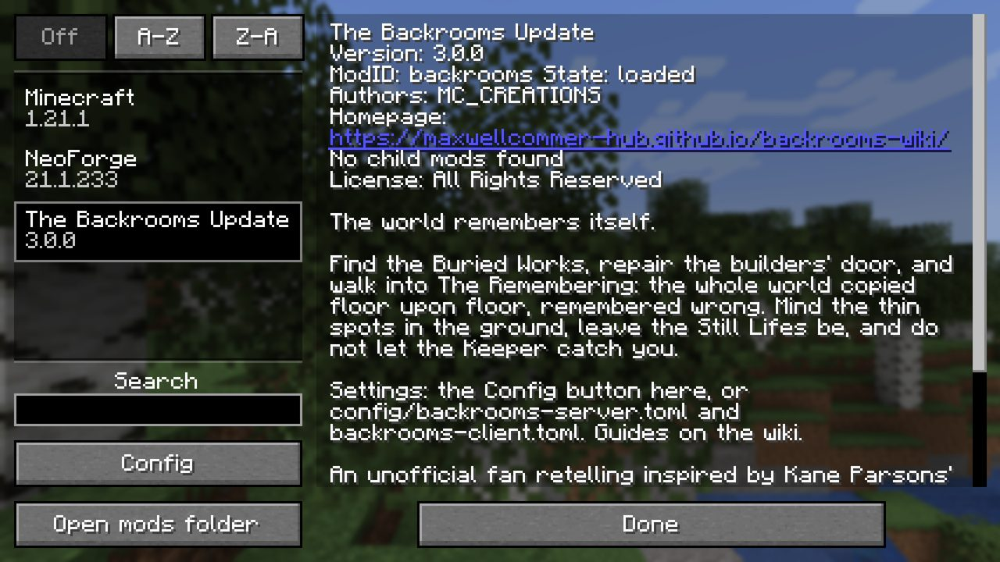

Reference
Config
Two small TOML files. The server one switches or tunes thin spots, build copying, the Keeper, Still Lifes, insanity and the leave cooldown.
Server config#
The server config is backrooms-server.toml. NeoForge writes it into the config folder of the game directory (on a dedicated server, the server folder) the first time the mod loads. Changes apply as soon as the file is saved; the few that only touch new chunks or new worlds say so. Every default is the intended experience.
| Key | Default | What it does |
|---|---|---|
thinSpots.enabled | true | Thin spots open at all. Off: no new ones open; ones already open stay. |
thinSpots.afterFirstDoor | true | Thin spots only start after the first door in the world has been opened. |
thinSpots.chancePerChunk | 0.02 | Chance (0 to 1) that a chunk gets a thin spot, rolled once when the chunk first loads. Only new chunks roll. Try 0.005 on busy servers. |
remembering.copyBuilds | true | The Remembering copies what players build and break in the overworld, a little wrong, when nobody is looking. |
remembering.memariumDropMultiplier | 1.0 | How often a Memarium tool gets a drop out of a block it breaks in The Remembering (0 to 1000). Each block has a base chance by value (dirt 1 in 5, diamond block 1 in 1000); this multiplies it. 0 turns drops off, 10 makes everything ten times as likely (up to certain). |
remembering.middleLevels | ["geometric:768:192"] | The plan of the levels under the End floors, as "kind:height:floor" entries. Only the geometric kind exists. The last level is stretched or cut to fill the space, and a world keeps the plan it first generated with, so this only affects new worlds. Leave it alone. |
remembering.viewDistance | 8 | How many chunks are sent to a player inside The Remembering at most (0 to 32; 0 uses the server's own view distance). The fog hides everything past 6 chunks and every chunk there is a 1392-block column, so 8 keeps multiplayer light. |
keeper.enabled | true | The Keeper hunts in The Remembering. |
keeper.quietMinutes | 40 | How long the Keeper stays away after he is beaten, in minutes (1 to 1440). Also the default for /backrooms quiet. |
stillLifes.enabled | true | Still Lifes (copies of players) appear in The Remembering. |
insanity.enabled | true | The insanity meter rises in The Remembering. |
commands.leaveCooldownSeconds | 600 | Cooldown of /backrooms leave, in seconds (0 to 86400). Ops have none. |
If your players spend more time inside than out
Start with the thin spots:
[thinSpots]
chancePerChunk = 0.005 # default 0.02Client config#
backrooms-client.toml in the config folder. Each player sets their own.
| Key | Default | What it does |
|---|---|---|
ambience | true | The Remembering's room tone and distant sounds. |
ambienceVolume | 1.0 | Volume of that ambience, 0 to 1. |
insanityOverlay | true | The dark veins at the screen edge as insanity rises. |
In game#
You can change the same settings in game. On the title screen open Mods, pick The Backrooms Update and press Config. The Mods list also shows the mod's description and a link to this wiki.
The screen has two pages: World Settings (the server file) and Your Settings (the client file). On World Settings each section, Thin Spots, The Remembering, The Keeper, Still Lifes, Insanity and Commands, opens with Edit. Every setting has a plain name, and holding the mouse over it says what it does. Undo and Reset are at the bottom.

| Name on the screen | Key in the file |
|---|---|
| World Settings | |
| Thin Spots Open | thinSpots.enabled |
| Wait for the First Door | thinSpots.afterFirstDoor |
| Chance per Chunk | thinSpots.chancePerChunk |
| Copy Player Builds | remembering.copyBuilds |
| Memarium Drop Multiplier | remembering.memariumDropMultiplier |
| Middle Levels | remembering.middleLevels |
| View Distance Inside | remembering.viewDistance |
| The Keeper Hunts | keeper.enabled |
| Quiet After a Defeat (minutes) | keeper.quietMinutes |
| Still Lifes Appear | stillLifes.enabled |
| Insanity Rises | insanity.enabled |
| Leave Cooldown (seconds) | commands.leaveCooldownSeconds |
| Your Settings | |
| Ambience | ambience |
| Ambience Volume | ambienceVolume |
| Insanity Veins | insanityOverlay |
Both files open with a Backrooms banner and a link to this wiki, and every section and setting has a short note in plain words. Delete a file to get every default back.